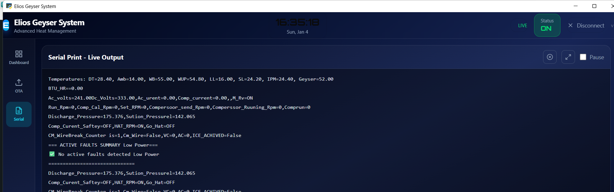

01
Sabro AC Debugger — “Reacthon”
Desktop diagnostics & OTA suite for ESP32 air conditioners
The tool the hardware team debugs with. It decodes live binary telemetry straight off the unit — temperatures, compressor RPM, discharge and suction pressure, fault flags — and streams it over local WebSocket for bench work or through Firebase when the unit is in the field. Firmware goes back the other way over the air.
- Transport
- Local WebSocket · Firebase Realtime Database relay
- Telemetry
- Custom binary payload parser, CSV capture, session logging
- Firmware
- OTA delivery with versioned payloads and crash history
PythonReactWebSocketFirebasePyWebView
Private — Sabro-Tech org

Live serial outputESP32 · WS